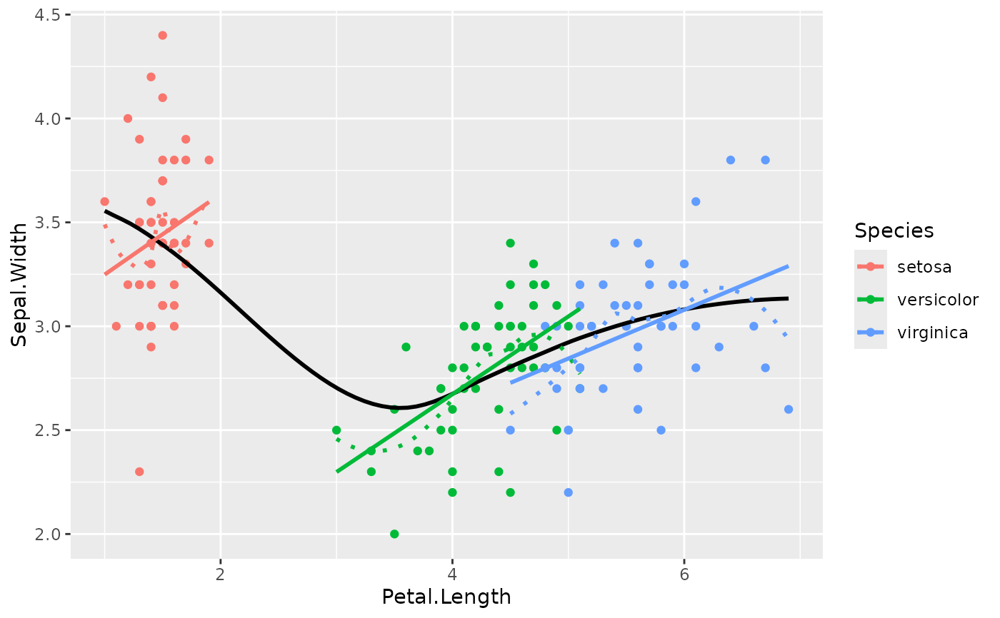
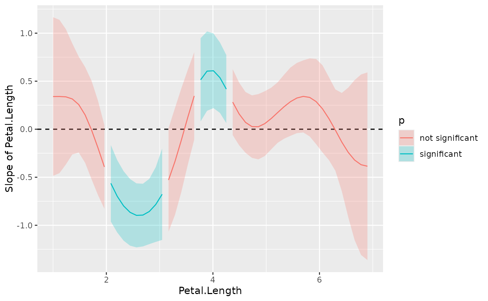
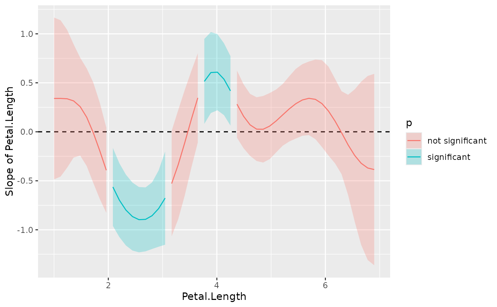

Estimate the slopes (i.e., the coefficient) of a predictor over or within different
factor levels, or alongside a numeric variable . In other words, to assess the effect of a predictor at specific configurations data. Other related
functions based on marginal estimations includes estimate_contrasts() and
estimate_means().
See the Details section below, and don't forget to also check out the Vignettes and README examples for various examples, tutorials and usecases.
estimate_slopes(model, trend = NULL, at = NULL, ci = 0.95, ...)Arguments
- model
A statistical model.
- trend
A character indicating the name of the variable for which to compute the slopes.
- at
The predictor variable(s) at which to evaluate the desired effect / mean / contrasts. Other predictors of the model that are not included here will be collapsed and "averaged" over (the effect will be estimated across them).
- ci
Confidence Interval (CI) level. Default to
0.95(95%).- ...
Other arguments passed for instance to
visualisation_matrix().
Value
A data.frame of class estimate_slopes.
Details
The estimate_slopes(), estimate_means() and estimate_contrasts() functions are forming a group, as they are all based on marginal estimations (estimations based on a model). All three are also built on the emmeans package, so reading its documentation (for instance for emmeans::emmeans() and emmeans::emtrends()) is recommended to understand the idea behind these types of procedures.
Model-based predictions is the basis for all that follows. Indeed, the first thing to understand is how models can be used to make predictions (see
estimate_link()). This corresponds to the predicted response (or "outcome variable") given specific predictor values of the predictors (i.e., given a specific data configuration). This is why the concept ofreference grid()is so important for direct predictions.Marginal "means", obtained via
estimate_means(), are an extension of such predictions, allowing to "average" (collapse) some of the predictors, to obtain the average response value at a specific predictors configuration. This is typically used when some of the predictors of interest are factors. Indeed, the parameters of the model will usually give you the intercept value and then the "effect" of each factor level (how different it is from the intercept). Marginal means can be used to directly give you the mean value of the response variable at all the levels of a factor. Moreover, it can also be used to control, or average over predictors, which is useful in the case of multiple predictors with or without interactions.Marginal contrasts, obtained via
estimate_contrasts(), are themselves at extension of marginal means, in that they allow to investigate the difference (i.e., the contrast) between the marginal means. This is, again, often used to get all pairwise differences between all levels of a factor. It works also for continuous predictors, for instance one could also be interested in whether the difference at two extremes of a continuous predictor is significant.Finally, marginal effects, obtained via
estimate_slopes(), are different in that their focus is not values on the response variable, but the model's parameters. The idea is to assess the effect of a predictor at a specific configuration of the other predictors. This is relevant in the case of interactions or non-linear relationships, when the effect of a predictor variable changes depending on the other predictors. Moreover, these effects can also be "averaged" over other predictors, to get for instance the "general trend" of a predictor over different factor levels.
Example: let's imagine the following model lm(y ~ condition * x) where condition is a factor with 3 levels A, B and C and x a continuous variable (like age for example). One idea is to see how this model performs, and compare the actual response y to the one predicted by the model (using estimate_response()). Another idea is evaluate the average mean at each of the condition's levels (using estimate_means()), which can be useful to visualize them. Another possibility is to evaluate the difference between these levels (using estimate_contrasts()). Finally, one could also estimate the effect of x averaged over all conditions, or instead within each condition (using [estimate_slopes]).
Examples
# Get an idea of the data
if (require("ggplot2")) {
ggplot(iris, aes(x=Petal.Length, y=Sepal.Width)) +
geom_point(aes(color=Species)) +
geom_smooth(color = "black", se = FALSE) +
geom_smooth(aes(color=Species), linetype = "dotted", se = FALSE) +
geom_smooth(aes(color=Species), method = "lm", se = FALSE)
}
#> Loading required package: ggplot2
#> `geom_smooth()` using method = 'loess' and formula 'y ~ x'
#> `geom_smooth()` using method = 'loess' and formula 'y ~ x'
#> `geom_smooth()` using formula 'y ~ x'

# Model it
model <- lm(Sepal.Width ~ Species * Petal.Length, data = iris)
# Compute the marginal effect of Petal.Length at each level of Species
slopes <- estimate_slopes(model, trend = "Petal.Length", at = "Species")
slopes
#> Estimated Marginal Effects
#>
#> Species | Coefficient | SE | 95% CI | t(144) | p
#> -----------------------------------------------------------------
#> setosa | 0.39 | 0.26 | [-0.13, 0.90] | 1.49 | 0.138
#> versicolor | 0.37 | 0.10 | [ 0.18, 0.56] | 3.89 | < .001
#> virginica | 0.23 | 0.08 | [ 0.07, 0.40] | 2.86 | 0.005
#> Marginal effects estimated for Petal.Length
plot(slopes)
 effectsize::standardize(slopes)
#> Estimated Marginal Effects (standardized)
#>
#> Species | Coefficient | SE | 95% CI | t(144) | p
#> -----------------------------------------------------------------
#> setosa | 0.89 | 0.60 | [-0.29, 2.07] | 1.49 | 0.138
#> versicolor | 0.86 | 0.22 | [ 0.42, 1.29] | 3.89 | < .001
#> virginica | 0.54 | 0.19 | [ 0.17, 0.91] | 2.86 | 0.005
#> Marginal effects estimated for Petal.Length
if (require("mgcv")) {
model <- mgcv::gam(Sepal.Width ~ s(Petal.Length), data = iris)
slopes <- estimate_slopes(model, at = "Petal.Length", length = 50)
summary(slopes)
plot(slopes)
model <- mgcv::gam(Sepal.Width ~ s(Petal.Length, by = Species), data = iris)
slopes <- estimate_slopes(model, trend = "Petal.Length",
at = c("Petal.Length", "Species"), length = 20)
summary(slopes)
plot(slopes)
}
#> Loading required package: mgcv
#> Loading required package: nlme
#>
#> Attaching package: ‘nlme’
#> The following object is masked from ‘package:lme4’:
#>
#> lmList
#> This is mgcv 1.8-38. For overview type 'help("mgcv-package")'.
#> No numeric variable was specified for slope estimation. Selecting `trend = "Petal.Length"`.
#> Warning: Using alpha for a discrete variable is not advised.

effectsize::standardize(slopes)
#> Estimated Marginal Effects (standardized)
#>
#> Species | Coefficient | SE | 95% CI | t(144) | p
#> -----------------------------------------------------------------
#> setosa | 0.89 | 0.60 | [-0.29, 2.07] | 1.49 | 0.138
#> versicolor | 0.86 | 0.22 | [ 0.42, 1.29] | 3.89 | < .001
#> virginica | 0.54 | 0.19 | [ 0.17, 0.91] | 2.86 | 0.005
#> Marginal effects estimated for Petal.Length
if (require("mgcv")) {
model <- mgcv::gam(Sepal.Width ~ s(Petal.Length), data = iris)
slopes <- estimate_slopes(model, at = "Petal.Length", length = 50)
summary(slopes)
plot(slopes)
model <- mgcv::gam(Sepal.Width ~ s(Petal.Length, by = Species), data = iris)
slopes <- estimate_slopes(model, trend = "Petal.Length",
at = c("Petal.Length", "Species"), length = 20)
summary(slopes)
plot(slopes)
}
#> Loading required package: mgcv
#> Loading required package: nlme
#>
#> Attaching package: ‘nlme’
#> The following object is masked from ‘package:lme4’:
#>
#> lmList
#> This is mgcv 1.8-38. For overview type 'help("mgcv-package")'.
#> No numeric variable was specified for slope estimation. Selecting `trend = "Petal.Length"`.
#> Warning: Using alpha for a discrete variable is not advised.
